Префектура Фукуи · Микуни и город Фукуи · еда
Краб Этидзэн-гани: почему за лучшим крабом Японии едут в Фукуи
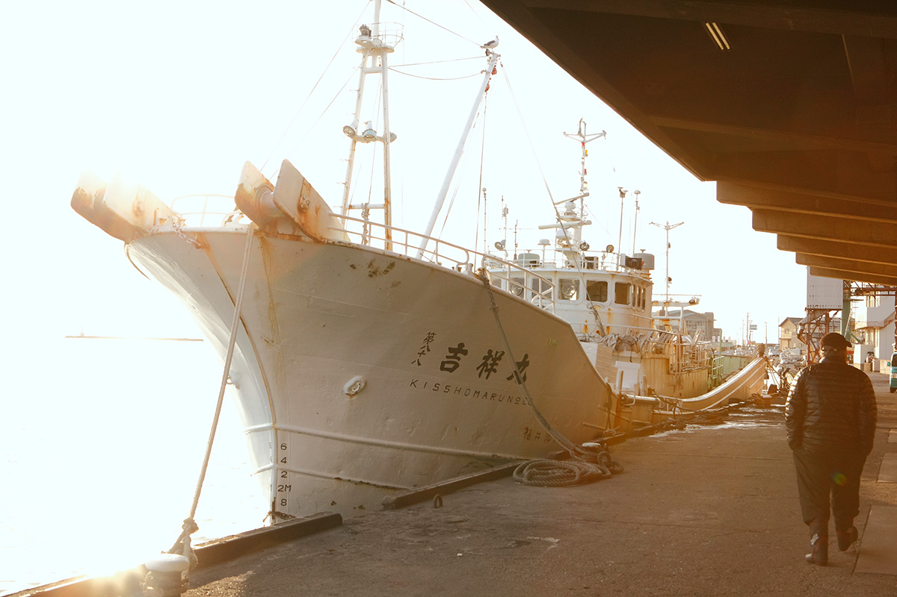
Зимой главный деликатес японского стола это краб, и лучший из них, как считают знатоки, ловят у берегов Фукуи. Только этому крабу разрешено попадать на стол императорского двора. Разбираемся, за что ему такая честь.
Сезон
Ночь на 6 ноября
Ровно в полночь 6 ноября в порту Микуни, на северном побережье префектуры Фукуи, с сигналом точного времени больше десятка судов выходят в тёмное море. Это начало лова Этидзэн-гани, которого здесь ждут весь год. Тем же вечером суда возвращаются под поднятыми праздничными флагами, с палубами, заваленными «красными драгоценностями».
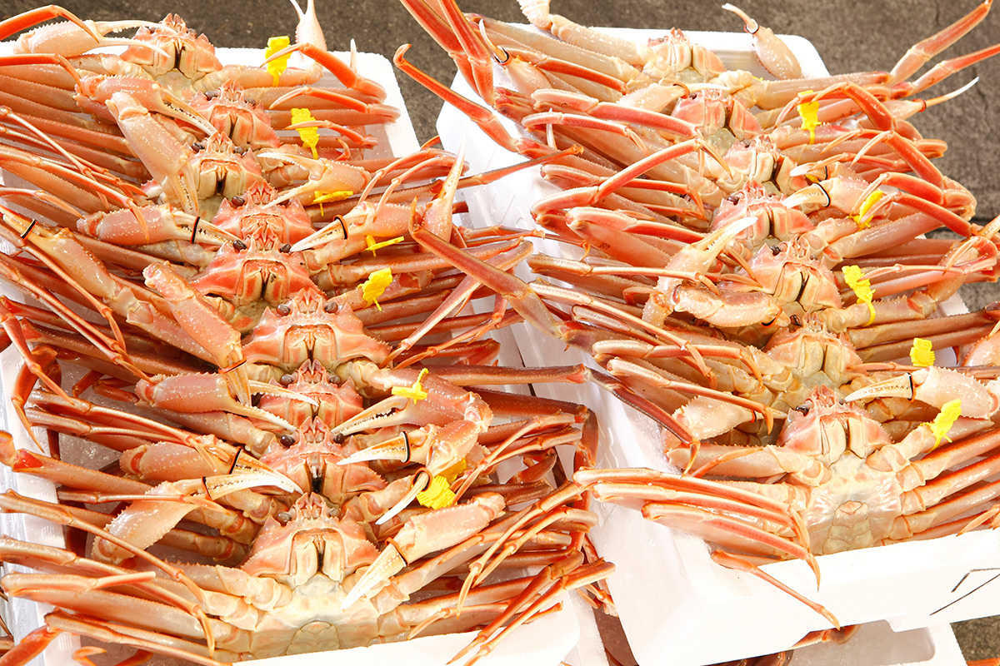
Прозрачно-оранжевых крабов делят на крупных, средних и мелких, каждому вешают жёлтую бирку и ровными рядами выкладывают в зале рынка. В 18:00 начинаются торги. Голоса аукционистов разносятся по залу, лоты уходят один за другим, и перекупщики везут крабов по ресторанам и гостиницам, где их уже ждут гости. От моря до стола всё происходит за один день.
В этом и главный секрет вкуса. Суда не стоят в море по нескольку дней и не везут улов в порт замороженным. Лучшие места лова, где для краба подходят и температура воды, и течения, и корм, и грунт, лежат недалеко от берега. Небольшие суда выходят и возвращаются, выходят и возвращаются, и на рынок попадает по-настоящему свежий краб.
Стригун опилио, по-японски дзуваи-гани, водится широко: от Хоккайдо и российских вод на севере до региона Сан-ин на западе Хонсю. Но отобранных самцов, выловленных в Фукуи, называют Этидзэн-гани. Мясо у них толще, ноги заметно длиннее, а сладость и сочность совсем другого уровня. Вкус у Этидзэн-гани деликатный и при этом глубокий, и любители крабов эту разницу чувствуют сразу.
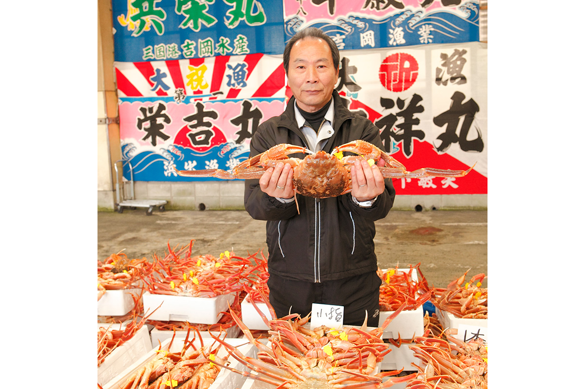
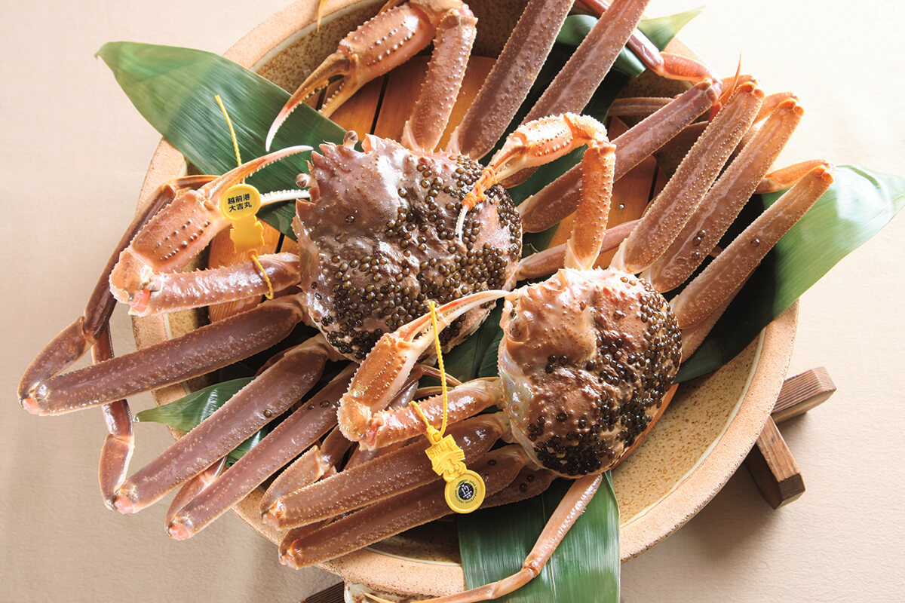
Сезон самцов длится с 6 ноября по 20 марта. Названия у краба меняются от края к краю: в Исикаве это Кано-гани, в Тоттори и Симанэ Мацуба-гани. Вид везде один, и вкусен он везде.
Торги
Вечерний аукцион в Микуни
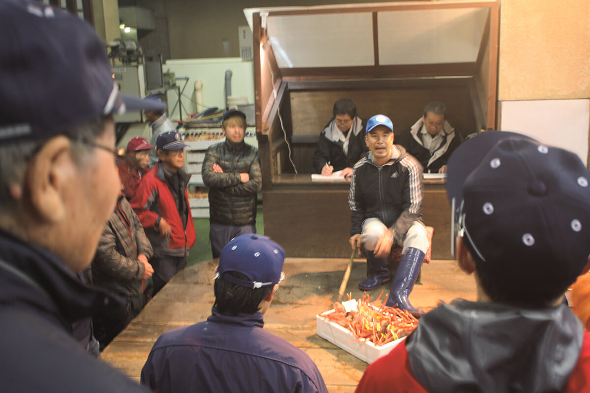
В порту Микуни проводят редкие для Японии вечерние торги. Суда уходят в море глубокой ночью и возвращаются к середине дня, а торги начинаются в 18:00. Аукционист выставляет ящики один за другим, покупатели показывают цену на пальцах, ставки растут в быстром ритме, и лот уходит тому, кто дал больше. На один ящик уходит от 10 до 30 секунд. Когда торги заканчиваются, все спешат к своим лавкам на маленьких грузовичках.
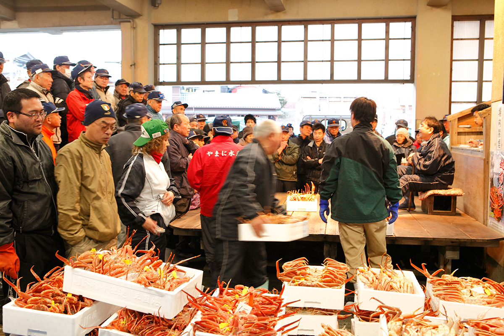
Это настоящий поединок аукционистов и перекупщиков. Раньше крабов на торгах бывало вдвое и вчетверо больше, и с каждым годом Этидзэн-гани становится всё ценнее. Поэтому и торги такие жаркие: за ними ждут гости, которым хочется получить краба прямо сегодня.
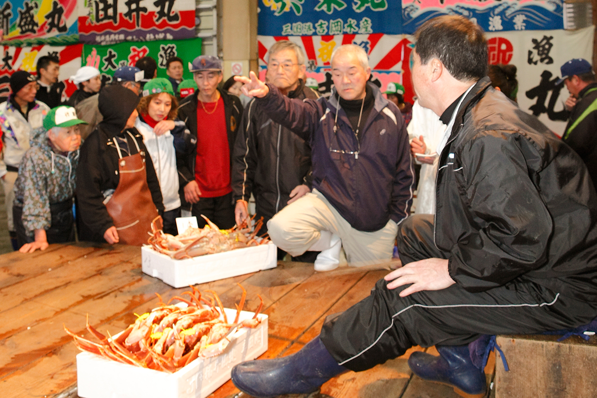
Бирки
Жёлтая, двойная и «Кивами»
Жёлтая бирка на клешне подтверждает, что перед вами Этидзэн-гани. Фукуи первой в стране начала вешать такие бирки, в 1997 году, и так делают во многих местах Японии. Для самых крупных крабов есть отдельная бирка «Кивами» («высшая степень»): вес от 1,3 кг, ширина панциря от 14,5 см, ширина клешни от 3 см. В 2019 году Этидзэн-гани получил государственный знак географического указания.
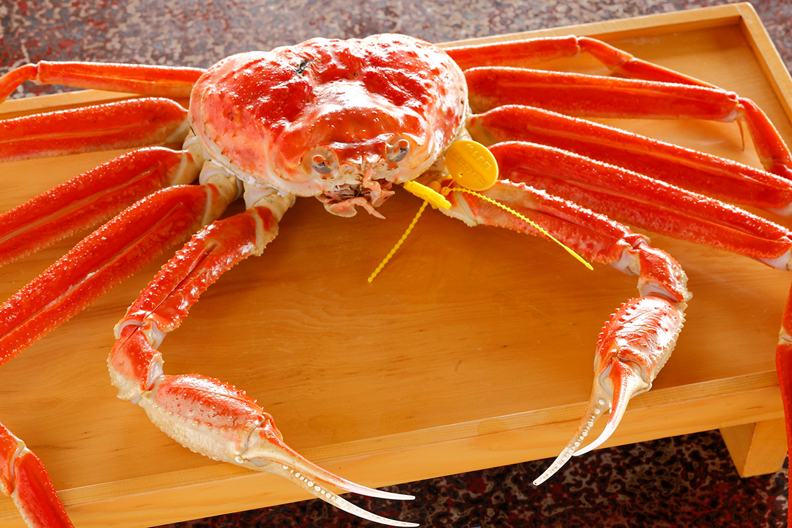
Этидзэн-гани единственный краб в Японии, которому разрешено подаваться к императорскому двору. Для двора отбирают крабов с особыми условиями: только после Нового года, когда вкус набирает силу, только хорошо созревших, весом от 1,1 кг, с красивым цветом, блеском и формой. Таким крабам вешают вторую жёлтую бирку. Эта «двойная бирка» и есть заветный знак для гурманов. Если повезёт со временем, попробовать краба такого уровня может и путешественник, но и цена у него соответствующая.
Самки
Сэйко-гани и мидзугани
Есть ещё сэйко-гани, самка стригуна. Она мельче самца, зато мясо у неё сладкое и плотное, а главное, в ней есть икра: внешняя, «сотоко», и внутренняя, «утико», с густым, глубоким вкусом. Настоящие знатоки, говорят, любят её больше самца. Стоит она сравнительно недорого: от 1000 до 3000 иен за штуку в 2020 году. Ловят самок недолго, чтобы сохранить запасы: в 2019 году лов шёл до конца декабря, в сезоне 2020/21 года до 10 января. Если хочется именно сэйко-гани, приезжать лучше пораньше.
А ещё есть краб, которого не найти за пределами префектуры. Чтобы вырасти, Этидзэн-гани больше десяти раз сбрасывает панцирь, и молодого краба сразу после линьки называют мидзугани, «водяной краб». Его ловят лишь около месяца, с конца февраля. Он недорогой, и в это время семьи Фукуи, от детей до стариков, едят его горами. Мидзугани очень нежный и не переносит перевозки живым, поэтому и остаётся дома.
Варка
Десять лет учиться смотреть, всю жизнь учиться варить
В Фукуи издавна говорят: чтобы научиться выбирать краба, нужно десять лет, а чтобы научиться его варить, не хватит и жизни. Краба здесь варят прямо на берегу, сразу после улова, и мастерство варки это ещё одна причина, по которой краб из Фукуи так хорош. Лучше всего попробовать его на месте, и, если получится, вместе с онсэном.
Ресторан
Kaikatei: краб, которого едят только в Фукуи
Ресторанный критик из Токио, которая годами пишет о лучших ресторанах Японии и мира, признаётся, что каждый год 6 ноября не может усидеть на месте. Около 2014 года она пришла к выводу: краба надо есть в Фукуи. Всё решила одна фраза хозяина пятого поколения старого ресторана Kaikatei в городе Фукуи, столице префектуры.
«Этидзэн-гани можно поесть и в Токио. Но есть краб, которого можно поесть только в Фукуи»
хозяин Kaikatei
Речь шла о мидзугани. Хозяин объяснил, что никто его не прячет: его просто нельзя довезти живым, поэтому есть его можно только в префектуре. Критик тут же записалась на мидзугани и в конце февраля попробовала его впервые. Вкус оказался чистым, сочным и сладким. Попробовала она и взрослого Этидзэн-гани, и его солидность тоже её покорила.
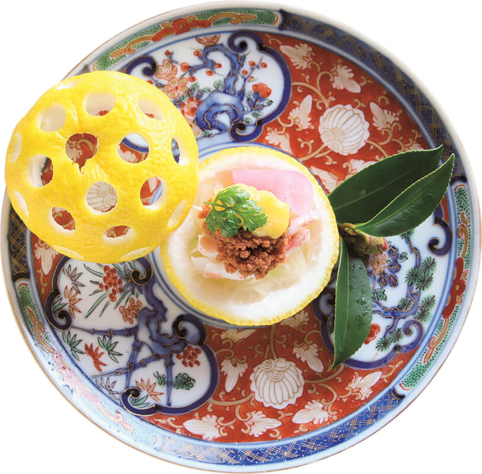
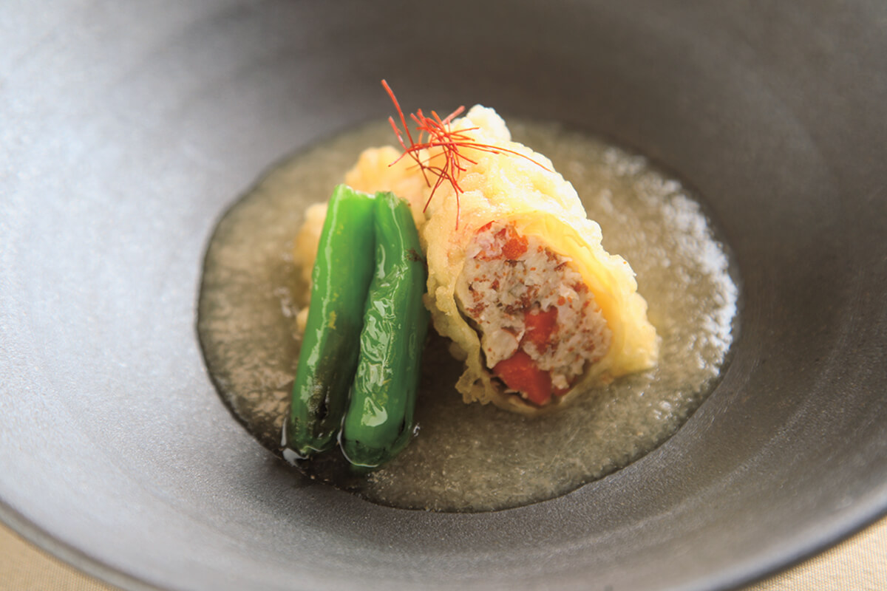
В Kaikatei варку доверяют опытному повару. Шеф-повар ресторана рассказывает, как устроен ужин.
«Перед ужином мы показываем гостям Этидзэн-гани живым и только потом начинаем готовить. Пятнадцать минут уходит на то, чтобы усыпить краба, и около 25 минут он варится. В это время гости едят другие блюда, и когда за столом становится особенно весело, мы приносим горячего краба прямо с огня. Именно в этот момент его вкус лучше всего»
шеф-повар Kaikatei
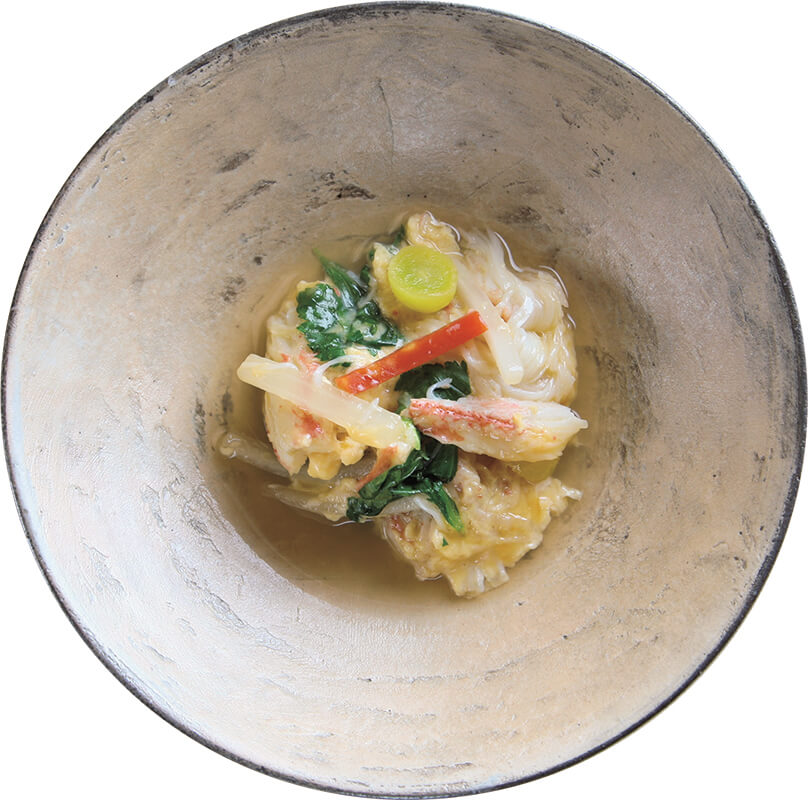
Когда вносят варёного краба, комната наполняется паром и поджаристым сладковатым ароматом. Панцирь и ноги заранее надрезаны, и мясо легко вынимается, если знать как. На столе стоит домашний крабовый уксус, но первый кусок лучше попробовать без ничего. Толстые, плотно набитые ноги упругие, почти как мясо, а вкус у них сладкий и мягкий, с запахом моря.
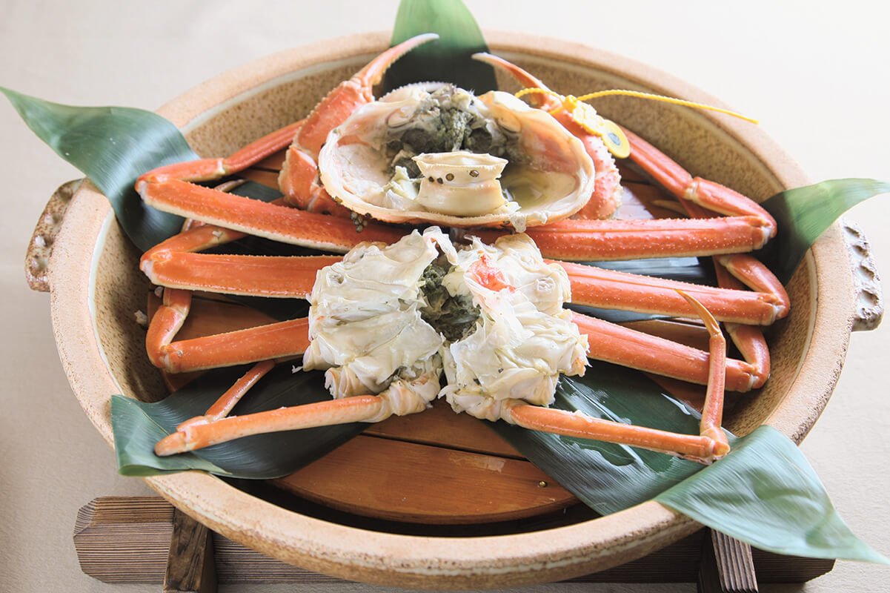
Хозяин считает, что лучше всего Этидзэн-гани именно варёный, но чтобы раскрыть вкус до конца, нужна техника, и эту технику стоит сделать общим богатством Фукуи. По его инициативе рестораны префектуры начали делиться друг с другом данными об Этидзэн-гани и о том, как с ним обращаться. Он много сделал и для того, чтобы Этидзэн-гани стал узнаваемой маркой.
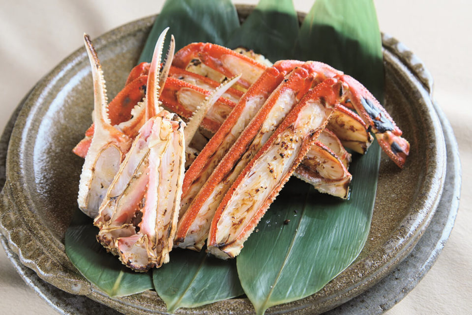
«Хочу сохранить культуру крабовой кухни Фукуи, рассказать о ней людям и передать её следующим поколениям»
хозяин Kaikatei
Дети Фукуи, которые каждую зиму наедаются краба досыта, наверняка будут помнить этот вкус и взрослыми. И поймут, как им повезло.
Kaikatei
- Адрес
- префектура Фукуи, город Фукуи, Тюо, 3-9-21
- Телефон
- +81 776-23-1009
- Часы работы
- 11:30–14:00, 17:30–22:00
- Выходные
- воскресенье, праздники
- Цены / Вход
- обед и ужин от 12 000 иен
- Сайт
- kaikatei.biz
Купить
Краб с доставкой по Японии
Если до Фукуи не добраться, Этидзэн-гани можно заказать с доставкой по Японии.
«Кани-но бо» в Микуни это более простая сестринская лавка известного рёкана «Боёро». Здесь есть Этидзэн-гани на любой кошелёк, вплоть до краба императорского уровня, и хозяин сам отбирает каждого.
«Кани-но бо»
- Адрес
- префектура Фукуи, Сакаи, Микуни-тё Сюку, 1-16
- Телефон
- +81 776-82-3925
- Сайт
- echizengani.jp
«Тэнтацу» в городе Фукуи это старая лавка, известная солёной морской икрой ежа сио-уни, одним из трёх великих деликатесов Японии. Этидзэн-гани здесь варят в день улова и отправляют в тот же день. В лавке много и других сезонных закусок, например сладких креветок, выдержанных в комбу.
«Тэнтацу»
- Адрес
- префектура Фукуи, город Фукуи, Дзюнка, 2-7-17
- Телефон
- +81 776-22-1679
- Сайт
- tentatu.com
Фото: Акито Отиай, Мунэаки Маэда.